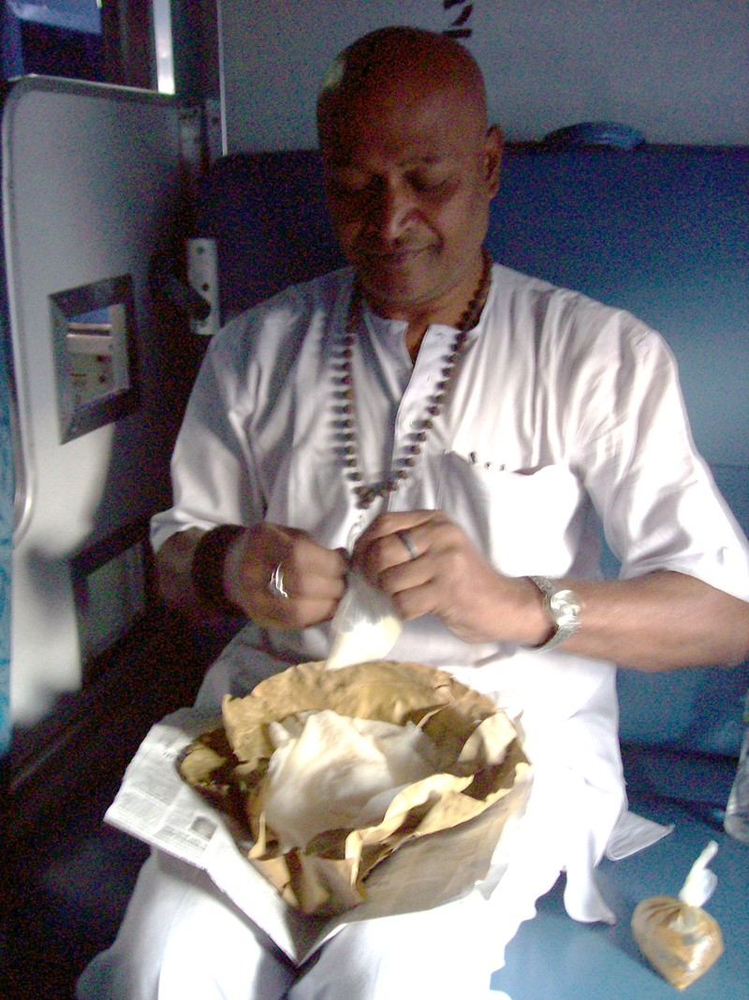
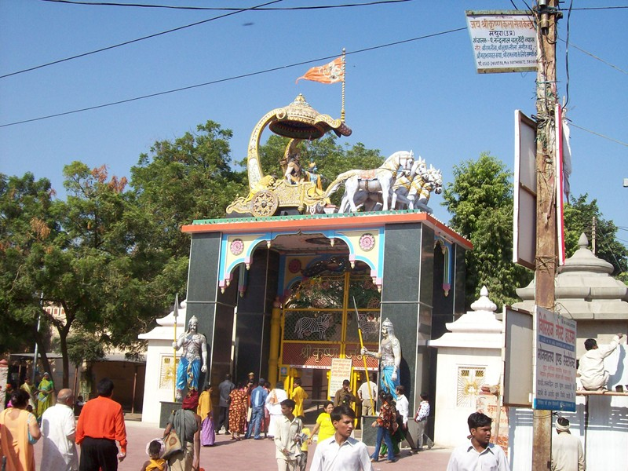
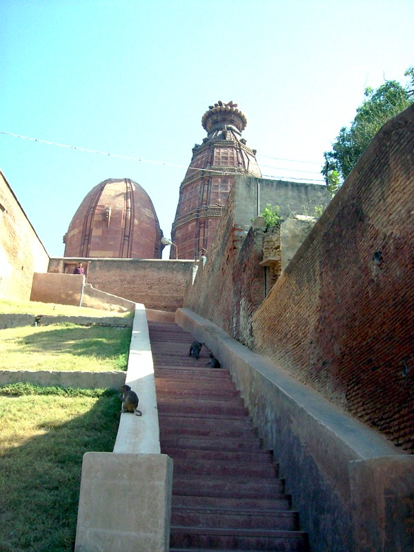
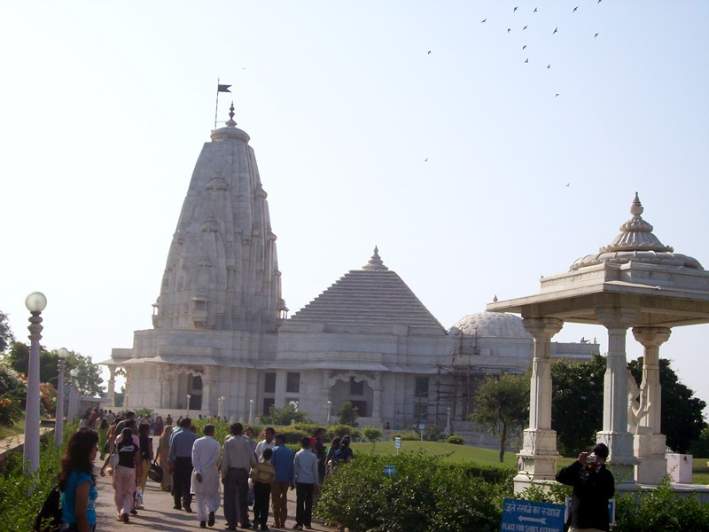
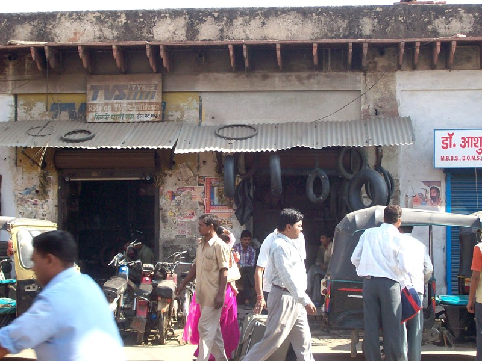
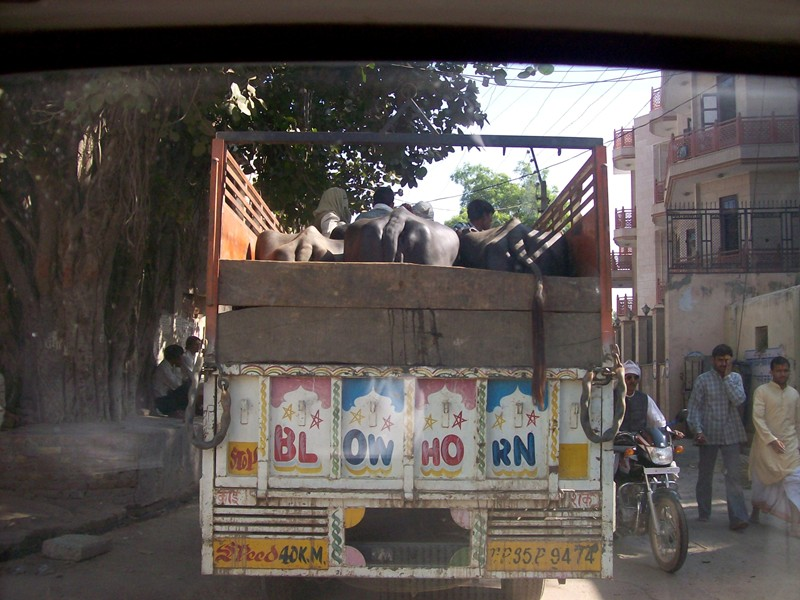
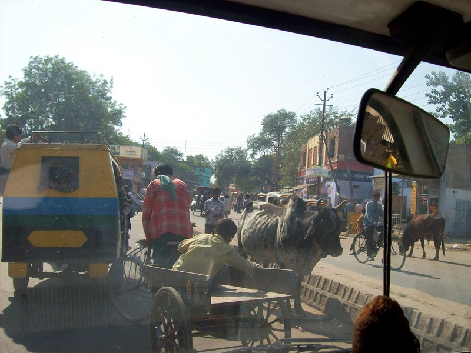

Mathura/Vrindaban

Breakfast on leaf plates on the train to Mathura

Krishna's birthplace at Vrindaban. Vrindaban is mostly a village of temples adjoining the present-day town of Mathura. Just to make things interesting, there's also a mosque in the compound. Krishna's lived around 3,000 B.C., yet his life has extraordinary parallels to that of Jesus. Krishna was born in jail, where his parents had been thrown by King Kansa, since it had been prophesized that the child would kill him. The night of Krishna's birth, the cell spontaneously opened and the guards fell asleep. Kansa later ordered all the newborn children in town to be killed .
We stopped her only long enough to take this photo. A six year old kid nagged me all the way back to the rickshaw to buy a garish kitschy photo of the gate. Halfway back he started tapping me. Being touched drives Ram nuts, so he bent over and gave the kid a blistering lecture. To no effect. Even seated rickshaw, he kept trying to shove the card in my hands.
Now that I could see him a face level, I recognized the look of dull misery that betokens true hunger. The rickshaw rattled off. Maybe I should have bought the card. Ram thought not. "You can't help everyone," he said. "And if you help him, you train them all to be pests."

Madan Mohan, the oldest temple in Vrindaban. It is associated with Sri Chaitanya (1486-1533), a reincarnation of Krishna who came to spread ecstatic chanting and dancing at a time when religion had gone dry. Orcs tried to wreck the temple and succeeded in destroying some of the ornamentation (it's art). The government is planning a restoration at some date.
Got a blessing from the priest, who put a spoon of water, probably straight from the "river" Jamuna (Trickle Jamuna today) in my hand for me to drink. Most prasad comes in the form of sweetmeats (variations on milk fudge), which I ate. In a magicianly act, I let the water trickle down my arm and disappear as I raised my hands to (apparently) drink.

A new temple at Vrindaban. People keep building temples around Vrindaban as acts of piety. Taking a play from Christianity's book, this one has stained glass windows depicting Krishna, Radha et al.

Flat tire store in Mathura. (OK, I know they're uninflated tubes. It was funny anyhow. Location joke. You had to be there.)

Oxcart, of a sort.

Traffic jam in Mathura
When first riding around in the chaos of cars, cows and bicycle taxis, watching people laugh off near-misses (generally incipient side-on collisons from the someone in the same lane), I first thought of a Disneyland ride. Then I realized I was in ToonTown. Riding on an Indian roadway is like being in a cartoon. Still, there are several traffic laws that apply.
1 - The vehicle travelling on the correct side of the road has the right of way, unless you honk first. (In cities, this is called load balancing. But even on rural four lane highways, you'll find cars coming straight at you.)
2 - Although traveling parallel to the roadway is optional, but may help traffic flow. (It's nothing close to laminar flow. For the pedestrian, look ten ways before crossing the road. I almost got creamed by a motorcycle by only looking two.)
3 - At a traffic circle, circulate in the direction that will get you to your exit quickest. This will minimize the quantity traffic in the circle.
4 - When passing a pedestrian or another vehicle, strive to maintain a constant three-inch clearance.
4 - In case of an accident that injures another party, it's not a question of insurance. It's not a question of the police. It's your ass then and there. Run.